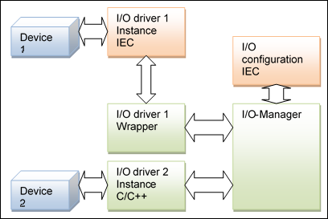
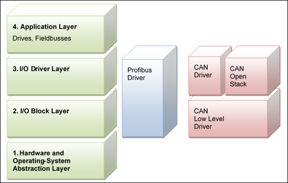

5.8.1. Concept¶
In CODESYS V3, an I/O driver can be implemented in ANSI-C/C++ and also in IEC! This sounds strange, because in IEC you typically have no access to the hardware. But in CODESYS V3, the hardware access can be realized by so called System-Libraries. These libraries offer the possibility to access for example a PCI bus (SysPCI.library), physical memory (SysShm.library) or device ports (SysPort.library).
An I/O driver will always be called by the runtime system in the appropriate moments. These moments are for example:
At download of an application to read in I/O-configuration (see previous chapter)
At the beginning of a task to read in input channels
At the end of a task to write out output channels
At sending an online service to read or write an I/O driver parameter
To enable this, the I/O driver has to implement one mandatory interface (Ibase) and can implement some optional interfaces (dependent of the supported features). These interfaces are declared in the next chapter. The interface functions are typically called by the so called I/O-manager. This component manages all I/O-drivers independent of their implementation. An I/O driver in IEC will be represented by a wrapper implemented in C/C++ against the I/O-manager, so from this point of view every I/O driver looks the same.
Each physical I/O device is typically supported by one instance of an I/O driver.
In the case of a C/C++-driver, the driver first has to (auto) detect its supported cards at startup of the runtime system and has to create one instance for each detected device.
In the case of an IEC-driver, the driver is automatically instantiated by CODESYS, if a device is appended in the graphical PLC-configuration. An auto detection of the device must be done at download time of the application and the physical device must be assigned to each instance of the driver afterwards.
The instantiation and assignment of a physical device to an I/O driver instance is described in chapter 8.5 in detail.
Architecture, calling I/O-drivers:
To simplify start writing an I/O-driver, we provide a toolkit with the source code frames of I/O-drivers and some description files (XML). We provide an I/O driver frame in C and in IEC. You can find the source code and the description files typically under $\Components\IoDriver\IoDrvTemplate.
In the CODESYS V3 I/O-concept, there are 4 different layers of functionality that the I/O-concept based on (see figure below).
In the figure above, you can see the four layers at the left side. The base level is the hardware- and operating system abstraction layer. This layer provides a standard interface for every hardware access (e.g. Shared-Memory, PCI, Interrupt-Handling, etc.).